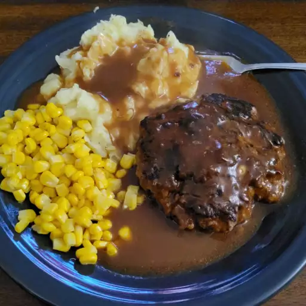

Selisbury Steak

Salisbury steaks with a savory onion sauce. This yummy recipe has been in my family for years. It's easy to cook but tastes like it took hours to make! I usually make enough extra sauce to pour over mashed potatoes.
List of Ingredents
- 1 1/2 pounds ground beef
- 1 (10.5 ounce) can condensed French onion soup
- 1/2 cup dry bread crumbs
- 1 egg
- 1/4 teaspoon salt
- 1/8 teaspoon ground black pepper
- 1 tablespoon all-purpose flour
- 1/4 cup ketchup
- 1/4 cup water
- 1 tablespoon Worcestershire sauce
Directions
- Salisbury steaks with a savory onion sauce. This yummy recipe has been in my family for years. It's easy to cook but tastes like it took hours to make! I usually make enough extra sauce to pour over mashed potatoes.
- Heat a large skillet over medium-high heat; add patties and brown on both sides. Drain excess fat.
- Blend remaining soup and flour together in a small bowl until smooth; mix in ketchup, water, Worcestershire sauce, and mustard. Pour soup mixture over patties in the skillet. Cover, and cook for 20 minutes, stirring occasionally.